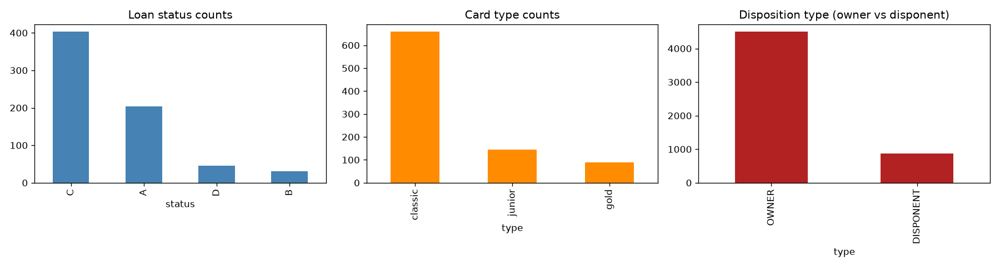
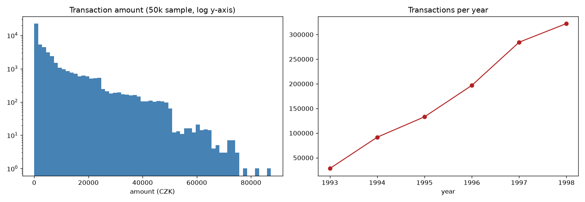
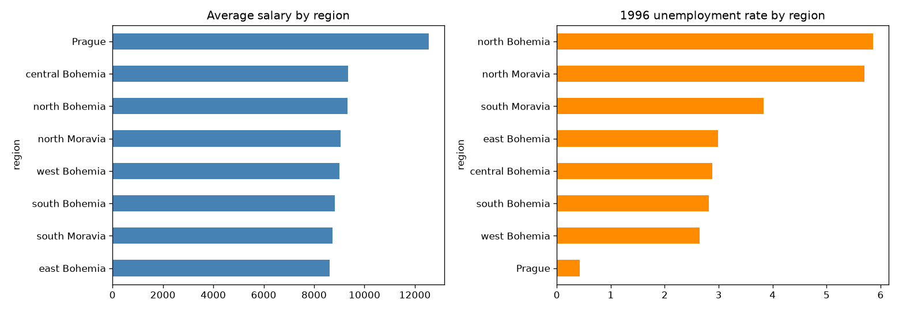
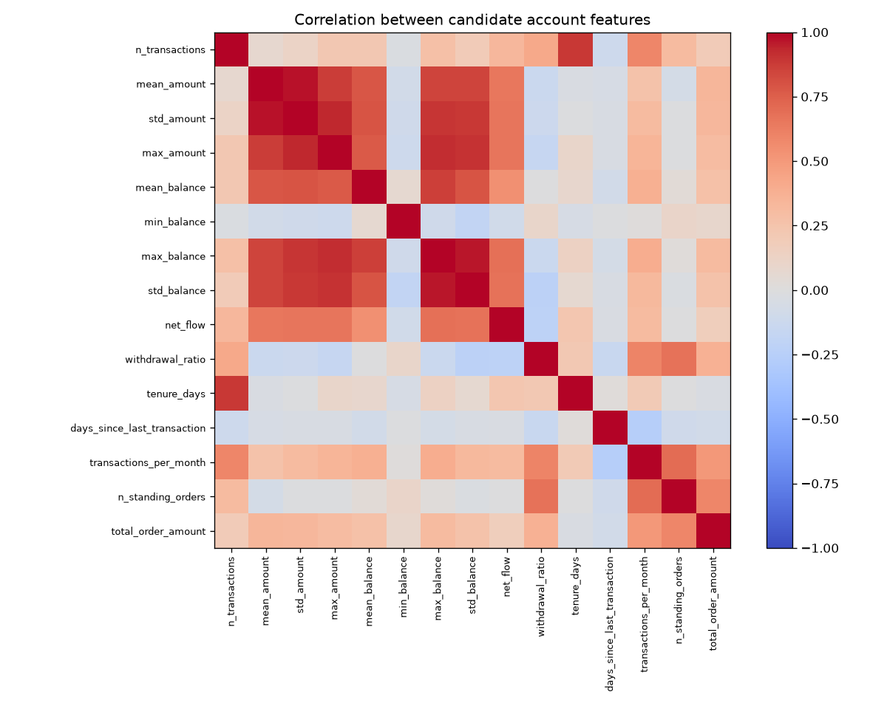
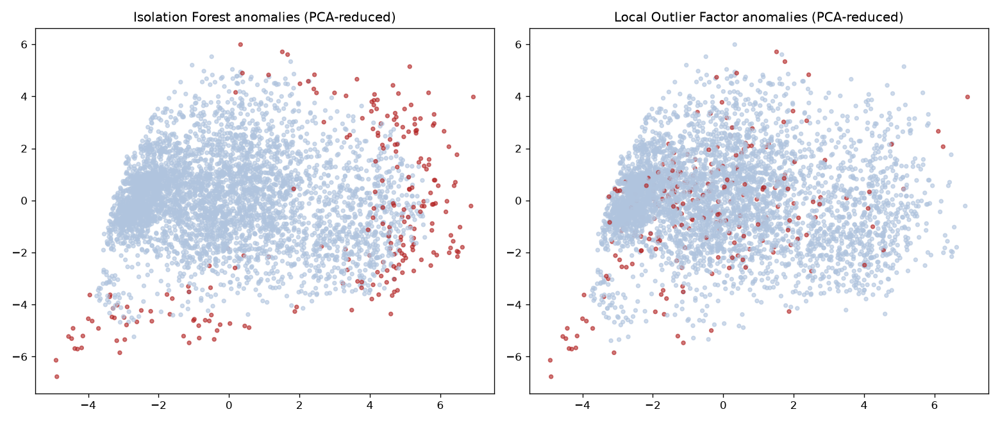
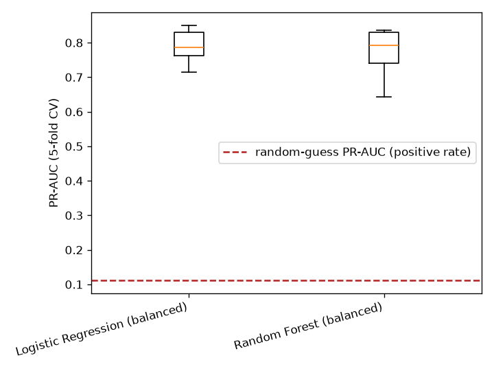
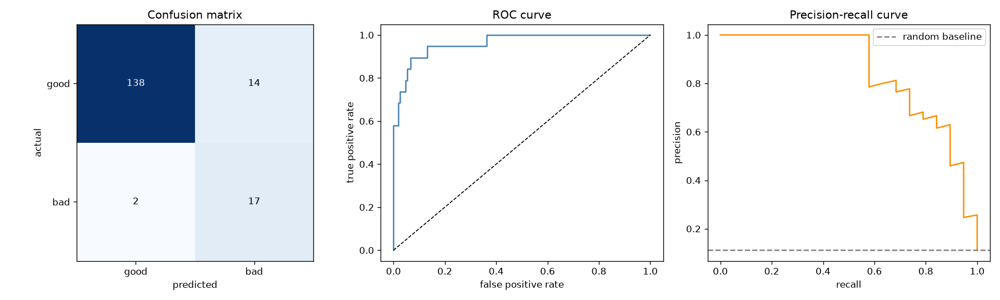
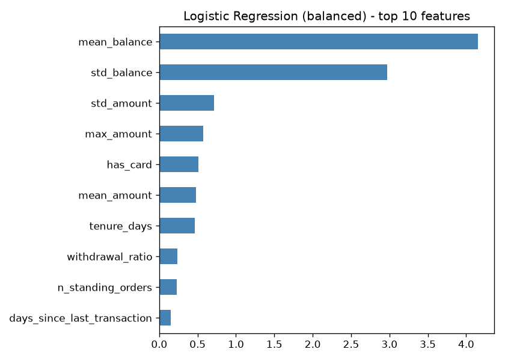

Data Science Project · PKDD'99 Berka Czech Bank Dataset
Anti-Money Laundering: Behavioral Account Profiling
4,500 accounts, 682 loans, just over a million transactions (1993-1998). There's no fraud/AML label anywhere in this data — it's ordinary retail banking activity. Rather than manufacture a fake label, this project runs unsupervised anomaly detection honestly, and puts real supervised modeling where a real label exists: whether a loan was repaid.
Source notebooks: github.com/Nik8x/Anti_money_Laundering
The dataset at a glance



Feature engineering
One row per account, built entirely with vectorized groupby
aggregation over the transaction log — counts, amounts, balance
behavior, tenure, recency, and standing orders.

mean_balance and std_balance are kept downstream.Unsupervised anomaly detection
Isolation Forest and Local Outlier Factor, run completely independently on the same scaled features, each flagging the most unusual 5% of accounts.

| Metric | Value |
|---|---|
| Flagged by Isolation Forest | 225 (5.0%) |
| Flagged by Local Outlier Factor | 225 (5.0%) |
| Flagged by both | 37 |
| Expected overlap if independent/random | ~11 |
| Bad-loan rate, flagged by both (of accounts with a loan) | 16.7% |
| Bad-loan rate, not flagged | 11.1% |
Supervised: predicting loan risk
Restricted to the 682 accounts that actually took out a loan, predicting whether it went bad (not repaid / in debt, 11.1% of loans) from account behavior — a real, independent outcome, unlike predicting a cluster ID back from its own inputs.

| Model | CV PR-AUC |
|---|---|
| Random-guess baseline (positive rate) | 0.111 |
| Random Forest (balanced) | 0.769 |
| Logistic Regression (balanced) | 0.789 |


Test PR-AUC 0.847 (ROC-AUC 0.962) against an 11.1% baseline positive rate — a strong, honestly-obtained result: the scaler is fit inside a pipeline on the training fold only, the split happens before any resampling, and the metric (PR-AUC) is the one that actually reflects performance on a rare positive class.
Notebooks
Key findings
- Two independent anomaly-detection methods agree far more than chance would predict. Isolation Forest and Local Outlier Factor each flag 225 accounts (5%); 37 get flagged by both — about 3.3x more overlap than the ~11 expected at random.
- The anomaly flag has a partial, honest link to bad loan outcomes — 16.7% bad-loan rate among jointly-flagged loan accounts vs 11.1% overall, checkable only for the minority of accounts that have a loan.
- Predicting bad loans from account behavior works well, honestly — test PR-AUC 0.847 (ROC-AUC 0.962) against an 11.1% baseline, with average balance and its volatility as the strongest signals.
- Loan risk and behavioral anomaly are different signals, not proxies for each other — top-15%-risk accounts get flagged as anomalous at almost the same rate as everyone else (23.1% vs 22.8%).
Future work
- An autoencoder reconstruction-error score as a third, differently-shaped anomaly method to compare against Isolation Forest/LOF.
- Month-over-month balance/transaction-count trend features per account, rather than static aggregates — real AML detection leans heavily on changes in behavior.
- Mine the retired
Financial_Transactions_Data_Analysisnotebook's per-table EDA (now in_old/) for additional features, e.g. transaction counterparty bank diversity.